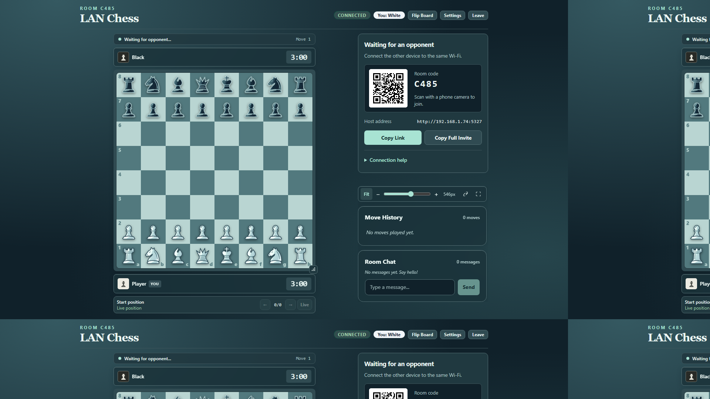
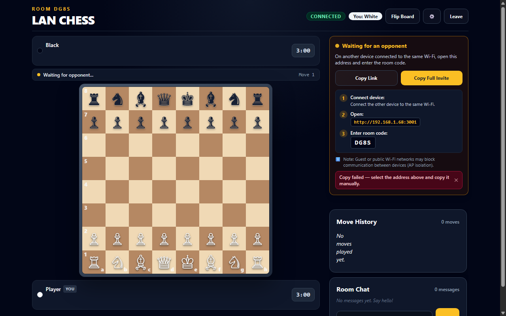
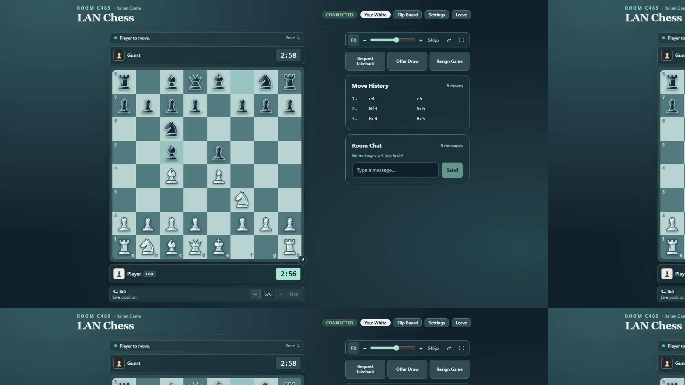
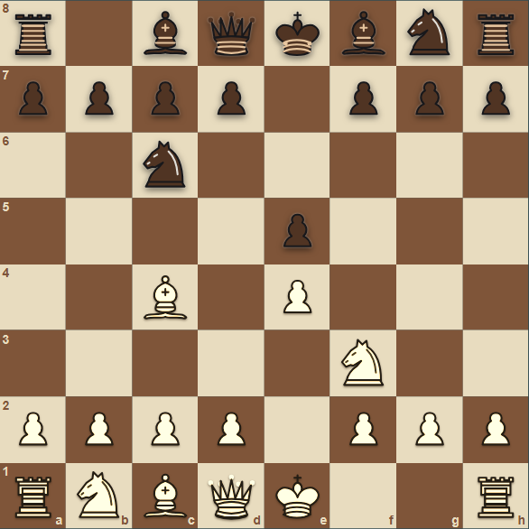
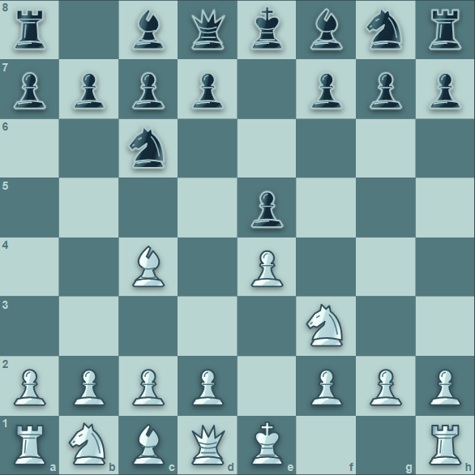

Local multiplayer chess
Chess across
the table.
Turn your Wi-Fi into a chess club. Host a game on your computer and invite a friend to play from their browser.
Windows x64 / macOS previewLocal multiplayer
From Wi-Fi to
first move.
Set the clock
Pick a time control and create a room on your computer.
Share the invite
Send the room link or let your opponent scan the QR code on the same Wi-Fi.
Take your seats
Your guest joins in a browser. Only the host needs the app.



Game modes
At the board.
Board workshop
Same position.
Different feel.
Drag across the board to compare Sea Glass and Walnut in the Italian Game.


Frequently asked questions
Before you play.
Do we need internet access?
Download the app first. After that, the host and guests can play on the same local network even when the internet is down.
Does everyone need the app?
Only the host installs LAN Chess. Guests open the room link on a phone, tablet or laptop.
What can I play on my own?
Play against Stockfish, solve 1,320 rated tactics or review saved games move by move with engine analysis. All three work offline.
What if my friend can’t join?
Connect both devices to the same network and allow LAN Chess to accept incoming connections. Some guest Wi-Fi networks isolate devices from one another.
Download LAN Chess · v1.2.4